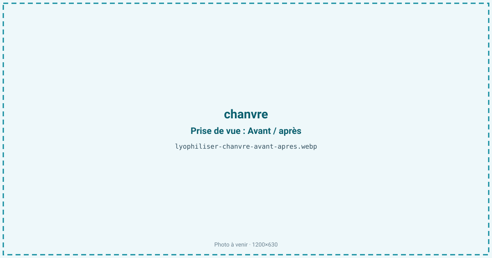
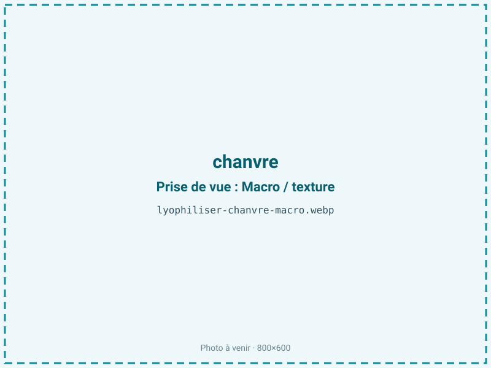
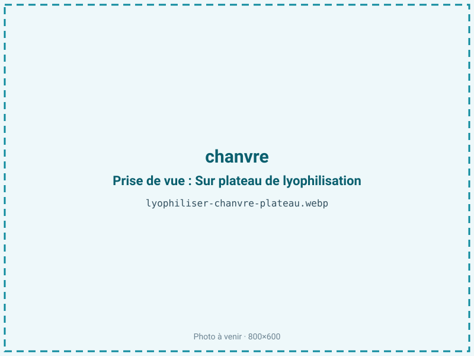
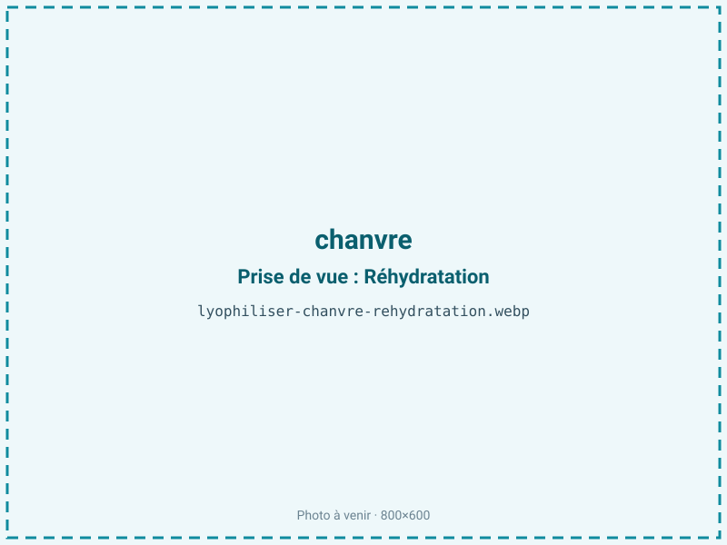

Lyophiliser du chanvre
Le chanvre alimentaire perd vite ses arômes végétaux et ses actifs sensibles à la chaleur dès qu'on le sèche classiquement. La lyophilisation retire l'eau à froid en préservant cannabinoïdes, terpènes et acides gras, pour une poudre d'actifs botaniques ou une graine stable. C'est un ingrédient pour les infusions, les compléments et la cosmétique.

En bref
Comment chanvre se comporte à la lyophilisation
Le chanvre couvre deux matières distinctes. La feuille et la sommité fraîche contiennent environ 75 à 80 % d'eau, de la chlorophylle, des cannabinoïdes sous forme acide (CBDA, CBGA) et des terpènes volatils (myrcène, limonène, pinène) très sensibles à la chaleur, à la lumière et à l'oxygène. La graine, elle, est bien plus grasse : son huile, riche en acides gras polyinsaturés oméga-3 (acide alpha-linolénique) et oméga-6, l'expose fortement à l'oxydation.
À la congélation, l'eau de la feuille cristallise dans les tissus foliaires fins ; à la sublimation, elle part vite car l'épaisseur est faible, laissant une feuille cassante. L'atout majeur du froid est d'éviter la décarboxylation : la chaleur transforme le CBDA en CBD et fait fuir les terpènes, alors que la lyophilisation fige la forme acide et le profil aromatique d'origine. Sur la graine, le front de sublimation est ralenti par la matrice grasse, et les lipides polyinsaturés se retrouvent exposés et oxydables une fois l'eau retirée.
Paramètres de cycle
Traiter feuille et graine séparément : elles n'ont ni la même eau ni le même comportement. La feuille s'étale en couche fine, 3 à 5 mm, pour un cycle court qui préserve les terpènes ; la graine, plus dense et grasse, demande un séchage plus long. Congeler à −30 à −35 °C. Garder une clayette basse et modérée en sublimation : toute montée en température ferait fuir les composés volatils et amorcerait la décarboxylation des cannabinoïdes.
La cible est aw 0,30 à 0,45. C'est une matière grasse, l'huile de chanvre étant riche en polyinsaturés : on ne sur-sèche pas, car descendre plus bas n'améliore pas la stabilité et accélère l'oxydation de l'huile. Le critère d'arrêt combine une activité de l'eau contrôlée dans cette plage et une matière sèche et cassante pour la feuille, non grasse au toucher pour la graine.
Pièges connus
- Feuille ou graine : traitement différent.
- Actifs sensibles à la lumière et à l'oxygène.



Variantes & provenance
La partie de la plante change tout. La fleur et la sommité sont les plus riches en cannabinoïdes et terpènes, la feuille plus chlorophyllienne, la graine surtout intéressante pour son huile et ses protéines. La variété de chanvre détermine le profil : certaines sont sélectionnées pour le CBD, d'autres pour la fibre ou la graine. La maturité à la récolte fait varier la teneur en cannabinoïdes et en terpènes, plus élevée en fin de floraison. Le cadre réglementaire impose du chanvre alimentaire à moins de 0,3 % de THC, ce qui oriente le choix variétal. Une graine décortiquée sèche plus vite mais expose davantage son huile à l'oxydation qu'une graine entière protégée par sa coque.
Conservation & DLUO
Le facteur limitant est double : l'oxydation des acides gras polyinsaturés de l'huile de chanvre, très sensibles au rancissement, et la dégradation des cannabinoïdes et terpènes sous l'effet de la lumière et de l'oxygène. Comme c'est une matière grasse, l'optimum de stabilité oxydative se situe entre aw 0,30 et 0,50 : en dessous de 0,30, on retire la monocouche d'eau qui protège les lipides et le rancissement s'accélère, sans gain de conservation. La barrière doit impérativement être opaque, car la chlorophylle et les cannabinoïdes se dégradent à la lumière, avec inertage azote et absorbeur d'oxygène pour l'huile. Comptez 12 à 18 mois en barrière opaque, de préférence au frais : l'oxydation double environ de vitesse tous les 10 °C. Une graine décortiquée se conserve moins longtemps qu'une graine entière.
12 à 18 mois en barrière opaque.
Estimez selon votre emballage :
Face aux autres procédés de séchage
Au séchage à l'air chaud, le chanvre perd ses terpènes volatils et sa chaleur décarboxyle les cannabinoïdes : le profil d'actifs recherché est altéré et la feuille brunit. Un séchage à chaud plus poussé oxyde en prime l'huile des graines. Le micro-ondes sous vide, moins chaud, reste risqué pour des composés aussi volatils et pour une graine grasse sujette aux points chauds. La lyophilisation est la seule voie qui préserve à la fois la forme acide des cannabinoïdes, le bouquet terpénique et l'intégrité de l'huile, sans apport de chaleur. C'est le procédé retenu quand l'objectif est un extrait ou une poudre d'actifs fidèle à la plante fraîche.
Marchés & applications
Poudre d'actifs botaniques pour compléments alimentaires, feuille et sommité lyophilisées pour infusions et tisanes, graine de chanvre stabilisée pour la nutrition (protéines et oméga-3), extraits pour la cosmétique et le bien-être. Les clients types sont les fabricants de compléments et de tisanes, les marques de nutrition végétale, les cosméticiens cherchant un actif de chanvre préservé, et les producteurs souhaitant valoriser leur récolte hors saison. Le cadre réglementaire du chanvre alimentaire (moins de 0,3 % de THC) encadre ces débouchés.
- Poudre d'actifs botaniques
- Infusions
- Compléments
Questions fréquentes — chanvre
Feuille ou graine, quelle différence de traitement ?
La feuille, fine et aqueuse, sèche vite en cycle court ; la graine, grasse, demande un séchage plus long et une vigilance accrue à l'oxydation.
La lyophilisation évite-t-elle la décarboxylation ?
Oui : l'absence de chaleur préserve les cannabinoïdes sous forme acide (CBDA), là où un séchage à chaud les transforme en CBD.
Les terpènes sont-ils conservés ?
En grande partie, grâce au froid et à un cycle court ; un conditionnement immédiat à l'abri de l'air limite leur fuite.
Le chanvre lyophilisé contient-il du THC ?
Il s'agit de chanvre alimentaire à moins de 0,3 % de THC ; le procédé ne crée pas de THC, il préserve le profil de la plante.
Pourquoi une barrière opaque ?
Chlorophylle et cannabinoïdes se dégradent à la lumière ; l'opacité et l'azote protègent aussi l'huile de l'oxydation.
Quel est le ratio ?
Environ 5:1 pour la partie fraîche à près de 78 % d'eau, soit à peu près 500 g de matière fraîche pour 100 g de produit sec.
Peut-on décortiquer la graine avant traitement ?
Oui, elle sèche plus vite, mais son huile s'oxyde plus rapidement qu'une graine entière protégée par sa coque.
Prochaine étape : envoyez-nous 200 g
Vous avez les repères du chanvre. La suite logique : nous envoyer un échantillon et repartir avec une fiche technique sur votre produit — rendement, aw finale, coût au kilo.
Tester du chanvre — 250 à 500 €Déductible de votre premier lot.